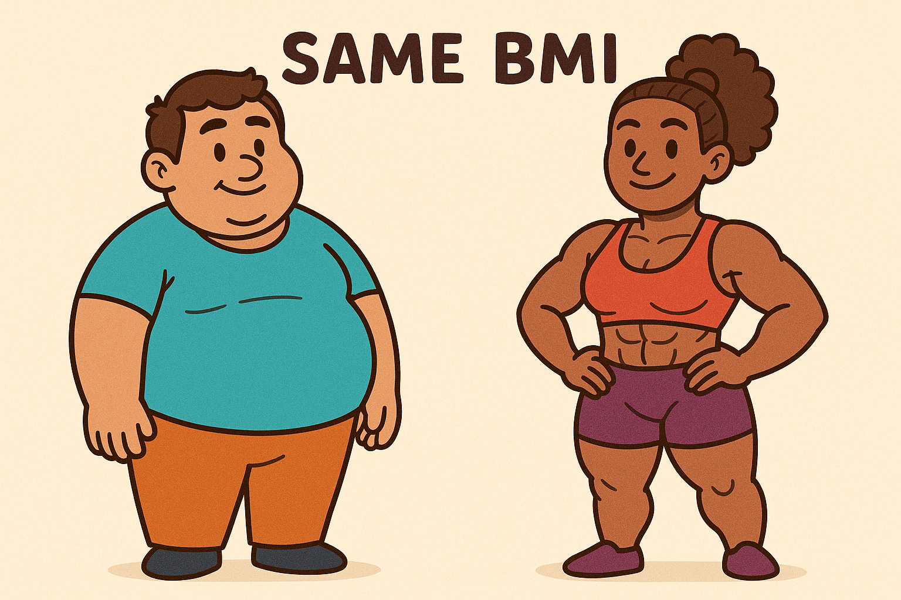

# ============================================================
# FB2NEP bootstrap cell (works both locally and in Colab)
#
# What this cell does:
# - Ensures that we are inside the fb2nep-epi repository.
# - In Colab: clones the repository from GitHub if necessary.
# - Loads and runs scripts/bootstrap.py.
# - Makes the main dataset available as the variable `df`.
#
# Important:
# - You may see messages printed below (for example from pip
# or from the bootstrap script). This is expected.
# - You may also see WARNINGS (often in yellow). In most cases
# these are harmless and can be ignored for this module.
# - The main thing to watch for is a red error traceback
# (for example FileNotFoundError, ModuleNotFoundError).
# If that happens, please re-run this cell first. If the
# error persists, ask for help.
# ============================================================
import os
import sys
import pathlib
import subprocess
import importlib.util
# ------------------------------------------------------------
# Configuration: repository location and URL
# ------------------------------------------------------------
# REPO_URL: address of the GitHub repository.
# REPO_DIR: folder name that will be created when cloning.
REPO_URL = "https://github.com/ggkuhnle/fb2nep-epi.git"
REPO_DIR = "fb2nep-epi"
# ------------------------------------------------------------
# 1. Ensure we are inside the fb2nep-epi repository
# ------------------------------------------------------------
# In local Jupyter, you may already be inside the repository,
# for example in fb2nep-epi/notebooks.
#
# In Colab, the default working directory is /content, so
# we need to clone the repository into /content/fb2nep-epi
# and then change into that folder.
cwd = pathlib.Path.cwd()
# Case A: we are already in the repository (scripts/bootstrap.py exists here)
if (cwd / "scripts" / "bootstrap.py").is_file():
repo_root = cwd
# Case B: we are outside the repository (for example in Colab)
else:
repo_root = cwd / REPO_DIR
# Clone the repository if it is not present yet
if not repo_root.is_dir():
print(f"Cloning repository from {REPO_URL} into {repo_root} ...")
subprocess.run(["git", "clone", REPO_URL, str(repo_root)], check=True)
else:
print(f"Using existing repository at {repo_root}")
# Change the working directory to the repository root
os.chdir(repo_root)
repo_root = pathlib.Path.cwd()
print(f"Repository root set to: {repo_root}")
# ------------------------------------------------------------
# 2. Load scripts/bootstrap.py as a module and call init()
# ------------------------------------------------------------
# The shared bootstrap script contains all logic to:
# - Ensure that required Python packages are installed.
# - Ensure that the synthetic dataset exists (and generate it
# if needed).
# - Load the dataset into a pandas DataFrame.
#
# We load the script as a normal Python module (fb2nep_bootstrap)
# and then call its init() function.
bootstrap_path = repo_root / "scripts" / "bootstrap.py"
if not bootstrap_path.is_file():
raise FileNotFoundError(
f"Could not find {bootstrap_path}. "
"Please check that the fb2nep-epi repository structure is intact."
)
# Create a module specification from the file
spec = importlib.util.spec_from_file_location("fb2nep_bootstrap", bootstrap_path)
bootstrap = importlib.util.module_from_spec(spec)
sys.modules["fb2nep_bootstrap"] = bootstrap
# Execute the bootstrap script in the context of this module
spec.loader.exec_module(bootstrap)
# The init() function is defined in scripts/bootstrap.py.
# It returns:
# - df : the main synthetic cohort as a pandas DataFrame.
# - CTX : a small context object with paths, flags and settings.
df, CTX = bootstrap.init()
# Optionally expose a few additional useful variables from the
# bootstrap module (if they exist). These are not essential for
# most analyses, but can be helpful for advanced use.
for name in ["CSV_REL", "REPO_NAME", "REPO_URL", "IN_COLAB"]:
if hasattr(bootstrap, name):
globals()[name] = getattr(bootstrap, name)
print("Bootstrap completed successfully.")
print("The main dataset is available as the variable `df`.")
print("The context object is available as `CTX`.")1.04 – Data Collection and Cleaning
Version 0.1.0
This workbook introduces:
- Data collection pipelines in nutritional epidemiology.
- Types of variables (continuous, categorical, ordinal, count) and how we code them.
- Identification of implausible or inconsistent values.
- Handling missing data (MCAR, MAR, MNAR – overview).
- Simple validation and visual checks.
- Practical issues such as “prefer not to say”, test questions, and units.
Run the first code cell to set up the repository and load the dataset.
1 1. Variable types and coding
Before we think about where data come from, we need to understand what kind of things we can measure.
In this workbook we will repeatedly use three broad types of variables:
Continuous variables
Numeric measurements on a (more or less) continuous scale.
Examples:BMI,SBP,energy_kcal,fruit_veg_g_d.Categorical variables (nominal)
Categories without an inherent order.
Examples:sex,SES_class,smoking_status.Ordinal variables
Categories with a meaningful order, but without fixed distances between levels.
Examples:IMD_quintile(1 = most deprived, 5 = least deprived),physical_activity(low/moderate/high).
Later, in the workbook on sampling and representativeness, we will use these variable types to compare our synthetic FB2NEP cohort to reference surveys (such as NHANES). Here we focus on:
- how different types of variables are stored and summarised in Python,
- what happens when we encode answers into numbers, and
- how we can already spot some problems just from the way data are coded.
1.1 UK Socio-Economic Status (SES) Classification – A Short Guide
In UK public health and survey research, socio-economic status is often measured using the NRS Social Grades.
(NRS: National Readership Survey) They are widely used in national surveys, market research, and sometimes in epidemiology.
1.1.2 2. The Two-Level System: ABC1 vs C2DE
Many surveys collapse the six groups into two wider bands:
- ABC1: higher or intermediate SES (A + B + C1)
- C2DE: lower SES (C2 + D + E)
This simplified classification is the one used in the FB2NEP synthetic dataset (SES_class).
1.1.3 3. Strengths and Limitations
Strengths - Simple, widely recognised, consistently used in UK surveys. - Shows clear associations with health behaviours and outcomes.
Limitations - Coarse: mixes diverse occupations within broad categories. - Not portable outside the UK (occupation structures differ). - Based on occupation, which is awkward for students, retirees, carers, and precarious workers. - Does not map neatly to education or income.
1.1.4 4. Harmonisation Issues Across Datasets (Education, Income, Occupation)
SES looks deceptively simple, but different datasets measure different things:
- NHANES (US) uses education (≤ high school / some college / college+).
- NDNS (UK) often uses education or income alongside NRS social grade.
- EPIC and UK Biobank use mixtures of occupation, education, income, area-level deprivation.
- FB2NEP uses occupation-based social grades (ABC1 / C2DE).
- International surveys (OECD, WHO STEPS, Eurostat) usually use education because occupation and income do not translate across countries.
This immediately creates problems for harmonisation.
1.1.4.1 Why SES ≠ education ≠ income ≠ occupation
SES is a latent construct — an underlying social position that cannot be measured directly.
Different operationalisations capture different aspects:
- Education → long-term human capital, cognitive resources, health literacy.
- Income → current material resources and capacity to purchase goods.
- Occupation → job security, working conditions, prestige, social capital.
- Area-level deprivation → neighbourhood environment, access to services.
These correlate, but not perfectly.
> Example: a highly educated PhD student may have low income; a long-serving electrician may earn more than a junior academic but be coded as C2, not ABC1.
Using one variable to stand in for SES always loses information.
1.1.4.2 Why the UK is unusual
The UK has a long-standing, highly standardised occupation-based SES system:
- NRS Social Grades (A–E), created for media and market research, became widely used in public health research.
- It maps occupation → social class → purchasing power in a historically industrial society.
- It remains deeply embedded in UK survey infrastructure (ONS, NDNS, IPSOS, BBC, etc.).
This is unusual internationally:
- Most countries do not have a national occupation-based SES scale.
- Education is the default SES variable in the US, EU, and WHO datasets because it is the most stable and portable across contexts.
- Occupations, job structures and prestige systems differ too much between countries to harmonise consistently.
Thus, using ABC1/C2DE outside the UK is difficult.
1.1.4.3 What happens when two SES systems must be aligned?
Any harmonisation requires strong assumptions.
Typical problems:
- Different constructs: NHANES education ≠ UK NRS grades.
- Different number of categories: one is binary (ABC1/C2DE), one has three or six categories.
- Different conceptual meaning: “College+” is not equivalent to “professional/managerial”.
- Non-monotonic relationships: more education ≠ higher job grade in every case.
Example mismatches: - A retired senior civil servant → NRS A/B but education may be “≤ High school”. - A university graduate in a temporary low-paid job → college+ + C2 or D. - A tradesperson with high income → C2 but with higher income than many ABC1 workers.
1.1.4.4 Implications for analysis
Harmonisation is always an approximation.
When aligning SES across datasets:
- Be explicit about the mapping rules you apply.
- Check frequencies and identify categories that map poorly.
- Document data loss (e.g. collapsing categories removes nuance).
- Acknowledge uncertainty introduced by any recoding.
- Perform sensitivity analyses where possible (e.g., different mapping schemes).
Teaching takeaway:
SES is a theoretical construct, not a variable.
Every dataset measures it differently.
Harmonisation therefore requires judgement, transparency, and a clear statement of limitations.
1.1.5 5. Takeaway
SES is not a single “true” attribute.
Different countries, surveys and traditions measure it differently.
For cross-dataset comparisons (e.g. NHANES vs FB2NEP), SES must be translated with care and the uncertainties should be stated clearly.
1.2 Excursion: Index of Multiple Deprivation (IMD)
Index of Multiple Deprivation (IMD) is the main area-based measure of deprivation used in England.
It does not describe an individual’s SES, but the deprivation level of the small area where they live.
1.2.0.1 1. What IMD measures
IMD combines seven domains of deprivation into a single index:
- Income
- Employment
- Education, skills and training
- Health and disability
- Crime
- Barriers to housing and services
- Living environment
Each small area (Lower Layer Super Output Area, LSOA; ~1,500 people) receives:
- a rank (1 = most deprived area in England),
- and derived deciles or quintiles.
In FB2NEP we use IMD quintiles, where:
- 1 = most deprived,
- 5 = least deprived.
1.2.0.2 2. IMD vs individual SES
IMD is area-level; SES (such as NRS social grade or education) is usually individual-level.
They capture related but different aspects:
- IMD reflects the context of a neighbourhood
(local income, employment, environment, access to services, crime).
- SES reflects an individual’s social position
(education, occupation, income, security).
Examples:
- A highly educated person may live in an IMD 1 area (cheap housing in a deprived neighbourhood).
- A low-income person may live in an IMD 4–5 area (long-term tenant in a relatively affluent area).
Key point: IMD is very useful for understanding health inequalities and neighbourhood effects,
but it must not be treated as “the same thing” as individual SES.
1.2.0.3 3. Why IMD appears in FB2NEP
Many UK cohort studies and surveys (e.g. NDNS, UK Biobank, some cancer registries) link IMD to participants via postcode.
Typical uses include:
- describing the deprivation profile of the cohort,
- studying gradients in risk factors and disease by area-level deprivation,
- adjusting for area-level deprivation as a potential confounder.
FB2NEP mirrors this practice by including IMD_quintile:
- It lets us explore inequalities in diet and health,
- and it sets up later Public Health exercises where IMD plays a central role.
1.2.0.4 4. Practical reminders for analysis
- Treat IMD as an ordered categorical variable (e.g. quintiles), not as a precise continuous scale.
- Be clear in write-ups that IMD is area-based, not a personal SES measure.
- Consider showing results by both individual SES (e.g. ABC1/C2DE) and IMD where possible.
1.3 Excursion: Physical Activity – Why Categories Are Vague (and Why It Matters)
Physical activity is essential in nutritional epidemiology, yet it is one of the least precisely measured variables in any dataset.
Even “good” surveys struggle because activity is multi-dimensional and hard to summarise in a single score.
1.3.0.1 1. Why physical activity is hard to measure
Physical activity varies by:
- Intensity (light, moderate, vigorous)
- Type (walking, cycling, work-related, leisure, sport, chores)
- Duration
- Frequency
- Context (commuting, occupation, exercise, childcare)
This creates an enormous range of behaviours that cannot easily be captured by simple categories.
1.3.0.2 2. How surveys measure activity
Most population studies rely on self-report, for example:
- “How many minutes per week of moderate physical activity do you do?”
- “How often do you walk for at least 10 minutes?”
- “How active is your job?”
- Likert scales such as low / moderate / high.
More detailed instruments exist (IPAQ, GPAQ), but they still rely on participant recall and judgement.
Even objectively measured PA (accelerometers, wearables) must be translated into categories, and the choice of cut-points affects results.
1.3.0.3 3. What FB2NEP uses (and why)
FB2NEP includes a variable:
physical_activity="low","moderate","high"
This is typical in cohort studies where detailed accelerometer data are not available.
However, these categories are:
- Vague: “moderate” for one person may be “vigorous” for another.
- Self-assessed: depends on how active participants feel.
- Context-dependent: a manual worker and a sedentary office worker with the same walking minutes may not classify themselves the same way.
In other words:
> These categories provide a rough indicator of activity level, useful for broad comparisons but not precise enough to infer true energy expenditure.
1.3.0.4 4. Common problems in analysis
Non-comparability across surveys
- NHANES uses MET-minutes.
- NDNS uses questionnaire-based categorisation.
- UK Biobank uses a mixture (IPAQ-like questions + accelerometer subsample).
- EPIC uses a 4-level Cambridge index.
These systems are not equivalent.
- NHANES uses MET-minutes.
Categorisation introduces information loss
- Collapsing minutes, intensity, and context into one label removes detail.
- “Moderate” may hide large differences in actual activity.
- Collapsing minutes, intensity, and context into one label removes detail.
Cut-off sensitivity
- If “moderate” is defined differently across studies, results are not directly comparable.
Residual confounding
- PA categories are too crude to fully capture lifestyle differences
(e.g. fitness, occupation, active commuting).
- PA categories are too crude to fully capture lifestyle differences
1.3.0.5 5. Why this matters for nutritional epidemiology
Physical activity is a major confounder for:
- Energy intake
- Obesity
- Cardiovascular risk
- Metabolic markers
- Sedentary behaviour
- Diet–disease associations
Using crude PA categories increases measurement error, which tends to:
- Bias effect estimates toward the null,
- Inflate residual confounding,
- Make PA look “less important” than it is.
1.3.0.6 6. Takeaway
- Physical activity categories are useful, but imprecise.
- Never over-interpret “low/moderate/high” as exact physiological measures.
- When comparing datasets, check how PA was measured and consider harmonisation issues.
- If possible, perform sensitivity analyses using alternative cut-points.
# 1.1 Quick look at the synthetic cohort and variable types
import numpy as np
import pandas as pd
import matplotlib.pyplot as plt
from IPython.display import display
# Show the first 5 rows
display(df.head())
# Show the data types of the first few columns
df.dtypes.head(20)# 1.2 Examples of how we summarise different variable types
# Continuous example: BMI
if "BMI" in df.columns:
print("BMI – continuous variable")
display(df["BMI"].describe())
# Categorical example: sex
if "sex" in df.columns:
print("\nsex – categorical (nominal)")
print(df["sex"].value_counts(dropna=False))
# Ordinal example: IMD_quintile
if "IMD_quintile" in df.columns:
print("\nIMD_quintile – stored as numbers, but conceptually ordered categories")
print(df["IMD_quintile"].value_counts(dropna=False).sort_index())1.4 1.3 How we (should) use different types
For continuous variables we normally use summaries such as mean, standard deviation, histograms, boxplots, and regression models with the variable on its original scale.
For categorical variables we usually use counts and proportions, and cross-tabulations (contingency tables), for example
smoking_status × CVD_incident.For ordinal variables, we technically have two options:
Treat them as ordered categories
(e.g. proportional-odds models, cumulative logit models, or ordered bar charts).
This respects the fact that the categories have an order but not a measurable distance.Code them as 0/1/2/3 and analyse them as if they were continuous
(e.g. using them in linear regression).
⚠️ This second option is risky because it quietly assumes:
- the “gap” between low → moderate is the same size as moderate → high;
- and that those distances are meaningful on a numeric scale.
These assumptions are almost never justified.
Treating ordinal scales as continuous can:
- distort effect sizes,
- produce misleading trends,
- violate model assumptions,
- and give regression coefficients that look precise but have no real-world meaning.
It works by accident, not by principle.
Best practice:
Use ordinal models when possible; if you collapse the scale to treat it as continuous, justify it clearly and perform sensitivity checks.
For this module we keep a simple rule of thumb:
Ordinal variables are not automatically continuous.
If you code them as numbers, you must still think about whether treating “low → moderate → high” as evenly spaced is sensible for your question.
1.5 1.4 Simple validation example: smoking and CVD
As a quick sanity check, we can look at how often incident cardiovascular disease (CVD) occurs in different smoking categories.
smoking_statusis a categorical exposure (for example, never / former / current).CVD_incidentis a binary outcome (0 = no event, 1 = event).
A natural question is:
“Is incident CVD more common in some smoking groups than others?”
To explore this, we can use pandas.crosstab with normalize="index":
- Each row corresponds to one smoking category.
- Each cell is the proportion of participants in that smoking group with / without incident CVD.
- Rows therefore sum to 1 (100%).
This does not prove causality, and it ignores confounders (for example, age, sex, SES),
but it is a very useful descriptive check:
- Does the pattern roughly match what we expect (higher CVD in current smokers than never smokers)?
- Are there any obviously strange values (for example, zero events in a large group)?
In the next cell we compute and display this row-normalised cross-tabulation.
if {"smoking_status", "CVD_incident"}.issubset(df.columns):
tab = pd.crosstab(df["smoking_status"], df["CVD_incident"], normalize="index")
print("Proportion with incident CVD by smoking status:")
display(tab)1.6 1.5 Making ordinal variables explicit in the data
Some variables in df are inherently ordered, even though they are stored as numbers or plain strings:
IMD_quintile: 1 (most deprived) → 5 (least deprived).
physical_activity:"low"→"moderate"→"high".
If we leave them as ordinary integers/strings, pandas and most modelling functions will treat them either as:
- purely categorical (no order at all), or
- continuous (for example, using 1–5 as if the gaps were equal).
Both can be misleading:
- Treating them as unordered categories throws away the ranking information.
- Treating them as continuous quietly assumes that the “distance” from 1→2 is the same as 4→5, which is rarely justified.
A better approach is to mark them explicitly as ordered categorical variables.
This preserves the ranking (1 < 2 < … < 5; low < moderate < high) without pretending that the gaps are equal.
In the next cell we:
- create
IMD_quintile_ordandphysical_activity_ordas orderedCategoricalvariables;
- keep the original columns so you can see both side by side.
Later, when we model these variables, we can use methods appropriate for ordered data (for example, ordered bar plots, stratified summaries, or proportional-odds models), rather than treating them as plain numbers.
if "IMD_quintile" in df.columns:
df["IMD_quintile_ord"] = pd.Categorical(
df["IMD_quintile"],
categories=[1, 2, 3, 4, 5],
ordered=True,
)
if "physical_activity" in df.columns:
df["physical_activity_ord"] = pd.Categorical(
df["physical_activity"],
categories=["low", "moderate", "high"],
ordered=True,
)
cols_to_show = [
c for c in ["IMD_quintile", "IMD_quintile_ord", "physical_activity", "physical_activity_ord"]
if c in df.columns
]
if cols_to_show:
display(df[cols_to_show].head())2 2. Data collection pipelines
In nutritional epidemiology, data usually come from several sources that are linked together:
- Questionnaires and interviews (for example, food frequency questionnaires, 24-hour recalls, lifestyle questionnaires).
- Laboratory measurements (for example, blood biomarkers, urinary biomarkers).
- Clinical examinations (for example, blood pressure, anthropometry).
- Registers and administrative data (for example, hospital episode statistics, cancer registries, mortality data).
- Public datasets and surveys (for example, NHANES in the United States, NDNS in the United Kingdom).
Typical steps in a data collection pipeline are:
- Sampling and recruitment of participants.
- Baseline data collection:
- Questionnaires completed on paper, online, or via interview.
- Clinical and anthropometric measurements.
- Biospecimen collection for later laboratory analysis.
- Follow-up data collection:
- Repeat questionnaires or clinic visits.
- Linkage to health registers to obtain information on disease outcomes.
- Data entry, coding and merging:
- Scanning or manual entry of questionnaires.
- Coding of free-text responses.
- Merging laboratory, questionnaire and register data using a unique participant identifier.
The synthetic FB2NEP dataset represents a merged cohort where these steps have already taken place. The underlying logic, however, is the same as in real-world studies such as NHANES or NDNS.
2.1 2.1 Units and harmonisation
When combining or comparing datasets, we must pay attention to units and coding schemes:
- Blood lipids: mmol/L (UK, Europe) vs mg/dL (US).
- Height: centimetres vs inches.
- Education and SES: different qualification systems across countries.
- Physical activity: self-reported categories vs device-based measures.
Before merging or comparing datasets we should always check:
- Units and reference ranges (for example, SBP in mmHg vs kPa).
- Coding manuals for questionnaires (for example, education categories).
- Whether local scores (for example, deprivation indices) are comparable at all.
In later workbooks, when we compare FB2NEP to NHANES or NDNS, we will see that harmonisation sometimes requires judgement and inevitably involves some information loss.
3 3. Coding and information loss
When we turn real-world phenomena into variables, we always lose information – long before we fit any models.
Examples:
- Turning height and weight into BMI loses information about body shape.
Two people with very different height and weight can have the same BMI. - Turning continuous BMI into three categories (for example, normal / overweight / obese) throws away all variation within each band.
- Turning detailed income into a few SES categories (
ABC1vsC2DE) hides differences within each broad class.
Why do we code and collapse variables?
Coding refers to the systematic assignment of numerical or categorical codes to raw data values (e.g., converting BMI into obesity categories such as 0 = underweight, 1 = normal, 2 = overweight, 3 = obese) to facilitate statistical analysis, grouping, or modelling.
- To shorten questionnaires.
- To make models simpler and more stable.
- To produce tables that fit on one slide or in a paper.
The trade-off is:
More coding and categorisation → simpler communication,
but less information and sometimes more bias.
In practice, we should:
- keep the rawest sensible version of each variable;
- document every coding step;
- think about what has been lost at each stage.
3.1 3.1 Example: collapsing continuous BMI into categories
BMI itself is already a derived measure:
- It combines height and weight into a single number (
kg/m²); - It does not distinguish between muscle and fat mass;
- It treats all people with the same BMI as equivalent, even if their body composition is very different.
On top of that, we often categorise BMI:
- “normal weight”, “overweight”, “obese”, sometimes with more bands;
- convenient for guidelines and tables;
- but it discards differences within each band
(for example, BMI 30.1 vs 39.9 are both just “obese”).
Please note
BMI cut-off points associated with metabolic risk differ across ethnic groups.
Several populations develop type 2 diabetes at lower BMI than White populations.
3.2 Ethnic-specific BMI thresholds for equivalent diabetes risk
Using a cohort of 1.47 million adults in England, Caleyachetty et al. (2021) compared the
BMI level at which different ethnic groups have the same age- and sex-adjusted incidence
of type 2 diabetes as White adults at BMI 30 kg/m².
| Ethnic group | BMI associated with equivalent diabetes risk | 95% CI |
|---|---|---|
| White | 30.0 kg/m² (reference) | – |
| South Asian | 23.9 kg/m² | 23.6–24.0 |
| Black | 28.1 kg/m² | 28.0–28.4 |
| Chinese | 26.9 kg/m² | 26.7–27.2 |
| Arab | 26.6 kg/m² | 26.5–27.0 |
Key teaching point:
A BMI of 30 kg/m² does not represent the same metabolic risk across all ethnicities.
For some groups (notably South Asian and Chinese populations), clinically relevant risk
appears at much lower BMI values.
Source:
Caleyachetty R. et al. Lancet Diabetes & Endocrinology 2021;9:419–26.
In the code below we:
- Start from continuous BMI.
- Create three broad categories using
pd.cut.
- Compare the summary of the original BMI distribution with the counts in each category.
This is purely illustrative – it shows how easy it is to throw away information. In later weeks, we will discuss when categorisation might be useful and when it is better to keep BMI continuous (or use other measures such as waist circumference).
3.2.1 3.1.1 Visual example: same BMI, different body composition
BMI cannot distinguish between fat mass and muscle mass.
In the illustration below, both individuals have (hypothetically) the same BMI, but very different body composition:
- one predominantly muscular,
- one with higher body fat.

This is why BMI is useful as a crude screening tool, but not a perfect measure of adiposity in individuals.
# 3.1 Example: collapsing continuous BMI into categories
if "BMI" in df.columns:
bmi = df["BMI"].copy()
# Very simple categories for illustration only
bmi_cat = pd.cut(
bmi,
bins=[0, 25, 30, np.inf],
labels=["normal", "overweight", "obese"],
right=False,
)
print("Original BMI (continuous) summary:")
display(bmi.describe())
print("\nBMI categories (illustrative):")
print(bmi_cat.value_counts(dropna=False))3.2.2 3.2 Self-reported height and weight
Many large studies (including some national surveys) use self-reported height and weight instead of measured values.
Typical patterns:
- People tend to over-report height.
- People tend to under-report weight.
- The bias is not random – it often depends on sex, age, and actual body size.
Consequences:
- BMI from self-report is usually biased downwards.
- Misclassification across BMI categories (normal / overweight / obese) is common.
- Associations between BMI and health outcomes can be biased if we ignore this measurement error.
For teaching purposes, it is helpful to remember that:
BMI combines two measured variables (height, weight)
and those measurements themselves may be biased.
4 4. Identifying implausible or inconsistent values
Even carefully collected data may contain values that are implausible or wrong. Examples include:
- Anthropometric values outside physiological limits (for example, BMI < 10 kg/m²).
- Blood pressure values that are extremely low or high.
- Energy intakes that are incompatible with life over the long term.
- Men who are recorded as being “post-menopausal”.
In practice we define simple rules to flag such values for review, and in some cases to exclude them from analysis.
# 4.1 Example: BMI range check
#
# These cut-offs are illustrative. In a real study they should be
# chosen with clinical input and clear documentation.
if "BMI" in df.columns:
print("Summary of BMI:")
display(df["BMI"].describe())
implausible_bmi = df[(df["BMI"] < 10) | (df["BMI"] > 70)]
print(f"Number of participants with BMI < 10 or > 70: {len(implausible_bmi)}")
display(implausible_bmi.head())# 4.2 Example: SBP (systolic blood pressure) range check
if "SBP" in df.columns:
print("Summary of SBP:")
display(df["SBP"].describe())
implausible_sbp = df[(df["SBP"] < 70) | (df["SBP"] > 260)]
print(f"Number of participants with SBP < 70 or > 260 mmHg: {len(implausible_sbp)}")
display(implausible_sbp.head())# 4.3 Distribution of BMI – visual check
%matplotlib inline
if "BMI" in df.columns:
plt.figure(figsize=(6, 4))
df["BMI"].hist(bins=30)
plt.xlabel("BMI (kg/m²)")
plt.ylabel("Number of participants")
plt.title("Distribution of BMI – initial check")
plt.tight_layout()
plt.show()4.1 4.4 Energy Intake Plausibility and the Goldberg Cut-off
In nutritional epidemiology, a recurring question is whether reported energy intake (EI) is compatible with the energy a person is expected to expend.
The Goldberg cut-off is a widely used, reproducible approach to detect implausible self-reported energy intakes.
4.1.1 1. Core idea
The method compares:
\[ \frac{\text{EI}}{\text{EE}} \]
where EE is the minimum energy expenditure expected for that person.
If the ratio is too low, the individual is likely to be an under-reporter.
4.1.2 2. Steps in the Goldberg method
- Estimate Basal Metabolic Rate (BMR)
Usually via predictive equations (Schofield, Henry, or similar) using:- age
- sex
- weight (and occasionally height)
- age
- Assume a minimum plausible Physical Activity Level (PAL)
A typical assumption is PAL = 1.55 for a “sedentary to lightly active” lifestyle.
This gives the minimum Total Energy Expenditure (TEE):
\[ \text{TEE}_{\min} = \text{BMR} \times \text{PAL} \]
- Compute the Goldberg ratio
\[ r = \frac{\text{Reported EI}}{\text{TEE}_{\min}} \]
Compare the ratio to a cut-off
A common lower limit is 0.76–0.80, derived by combining:
- day-to-day variation in energy intake,
- variation in BMR prediction,
- sampling duration.
If \[ r < \text{cut-off} \], the intake is considered implausibly low.
4.1.3 3. Interpretation
The rule does not say the individual is deliberately misreporting.
It indicates that the reported intake is statistically incompatible with sustaining basic physiological requirements over time.
Examples: - A reported EI of 900 kcal/day for a healthy adult is implausible.
- A physically active person reporting 1,200 kcal/day may also be flagged.
4.1.4 4. Why the Goldberg cut-off is widely used
- Transparent and fully formula-based.
- Simple and implementable in any dataset.
- Consistent across studies.
- Helps identify outliers before modelling.
However, the method is designed for population-level plausibility screening, not as a diagnostic tool for individual behaviour.
4.2 4.5 Limitations of the Goldberg Cut-off
Although influential, the Goldberg approach has important limitations:
4.2.1 (a) Strong assumptions about PAL
Using a fixed PAL (for example 1.55) ignores the wide variation in physical activity between individuals.
TEE may be substantially higher or lower than assumed, causing: - false positives (flagged as under-reporting but plausible),
- false negatives (severe under-reporting may not be flagged if activity is low).
4.2.2 (b) BMR prediction error
Predictive equations for BMR introduce error: - ±5–10% for many individuals, - larger for those with atypical body composition.
If BMR is misestimated, the Goldberg ratio becomes misleading.
4.2.3 (c) One-day (or few-day) intake is not habitual intake
Short-term 24-h recalls show large day-to-day variation, making the ratio unstable.
4.2.4 (d) Cannot distinguish intentional dieting
Low reported intakes may reflect: - short-term restriction, - illness, - poor recall, - dieting behaviour.
The cut-off treats all as “implausible”.
4.2.5 (e) Systematic bias in self-reporting
Energy misreporting is not random: - overweight individuals tend to under-report energy, especially snacks and high-fat foods; - some demographic groups systematically under- or over-report.
Thus the Goldberg decision can itself introduce bias, for example: - removing more participants with high BMI, - altering diet–BMI or diet–disease associations.
This concern is highlighted in recent evaluation studies.
4.3 4.6 Recent evidence and critique
A recent paper in Nature Food Bajunaid et al., 2025 “Energy intake and expenditure in doubly labelled water studies worldwide”
provides an updated perspective:
- Doubly labelled water (DLW) studies show large inter-individual variation in TEE, wider than commonly assumed in Goldberg calculations.
- Habitual EI is often higher than self-reported, but misreporting varies by age, sex, BMI and cultural context.
- The study stresses that physiological variation is larger than the Goldberg framework assumes.
- Therefore, using a universal PAL and narrow cut-offs may systematically misclassify valid data.
This supports a broader consensus that:
The Goldberg cut-off is useful as a descriptive tool,
but insufficient for high-stakes decisions (for example, excluding participants).
4.4 Takeaway
The Goldberg cut-off is a useful first-pass plausibility screen, but:
- it rests on strong assumptions,
- it is sensitive to prediction error,
- and it can introduce bias if used uncritically.
Modern datasets—with diverse populations, high variation in physical activity, and systematic misreporting—require more nuanced approaches, ideally supported by validation studies (for example, DLW data).
In FB2NEP we therefore use the Goldberg principle to illustrate:
- how plausibility checks work,
- where modelling decisions come from,
- and why epidemiological analyses require transparent assumptions.
# 4.5 Simple exploration of energy intake
if "energy_kcal" in df.columns:
print("Summary of reported energy intake (kcal/d):")
display(df["energy_kcal"].describe())
plt.figure(figsize=(6, 4))
df["energy_kcal"].hist(bins=30)
plt.xlabel("Energy intake (kcal/day)")
plt.ylabel("Number of participants")
plt.title("Distribution of reported energy intake")
plt.tight_layout()
plt.show()5 4.5 Plausibility and scale: hippo vs mouse energy intake
Think of reported energy intake:
- A very small human reporting 15 000 kcal/day is hippo-level – probably implausible.
- A large human reporting 600 kcal/day long term is mouse-level – probably implausible too.
The FB2NEP dataset includes energy_kcal. When we look at its distribution we will:
- check whether values lie in a broadly plausible human range, and
- remember that even plausible values can still be under- or over-reported.
Later, you will encounter the Goldberg cut-off, which formalises this idea by comparing reported intake with estimated energy requirements.
6 5. Rare categories and “Prefer not to say”
Questionnaires often include categories such as “Prefer not to say” or very rare responses. These raise practical questions:
- Should they be combined with another category?
- Should they be treated as missing data?
- Do they indicate a problem with the question (for example, perceived sensitivity)?
Some patterns can be red flags:
- A question that is consistently skipped (many missing values) compared with others.
→ Possible misunderstanding, poor wording, or discomfort with the topic. - A single participant who answers “Prefer not to say” to almost everything.
→ Possible disengagement; their data may be low quality overall. - Systematic non-response to certain topics (for example, income, alcohol).
→ Missingness may be MNAR and needs careful handling.
6.1 5.1 Test questions and internal consistency
Some questionnaires include one or two test questions to check whether participants are paying attention. Typical examples are:
- “To show that you are paying attention, please select ‘strongly agree’ for this statement.”
- “For this question only, please tick ‘never’.”
- “The colour of the sky on a clear day is… (please tick ‘blue’).”
Other examples are factual statements about well-known places such as:
- “Wasilla, Alaska is in the continental United States — please select ‘Strongly disagree’.”
- “Barrow, Alaska never receives snow — please select ‘Disagree’.”
These items are widely used in survey-methods teaching because the correct answer is obvious, yet respondents who are not reading the questions carefully will fail them.
If participants fail these items, their responses might be low quality.
- This is common in online surveys and panel studies.
- In large epidemiological cohorts the practice is less standard, but the idea is similar: we want to detect obviously invalid or careless data.
Instead of explicit test questions, cohort studies often rely on internal consistency checks, for example:
- A participant reporting “never drinks alcohol” but also giving detailed answers about
number of glasses of wine per week and maximum units on one occasion.
- Reporting 0 minutes of physical activity per week, but also stating that they cycle to work every day.
- Marking “current smoker” and “has never smoked regularly” on different pages.
- A male participant answering “post-menopausal” or reporting age at menopause.
FB2NEP does not include explicit test questions, but you can treat these kinds of internal contradictions as serving a similar purpose: they flag records that may need closer inspection or, in some analyses, exclusion.
# 5.2 Simple frequency tables for key categorical variables
for col in ["sex", "SES_class", "smoking_status", "physical_activity"]:
if col in df.columns:
print(f"\nValue counts for {col}:")
print(df[col].value_counts(dropna=False))7 6. Missing data: MCAR, MAR, MNAR (overview)
Almost all real datasets contain missing values. Three concepts are important:
- MCAR (Missing Completely At Random):
- The probability of missingness is unrelated to observed or unobserved data.
- Example: a random sample of blood tubes is lost in the post.
- MAR (Missing At Random):
- The probability of missingness depends only on observed variables.
- Example: older participants are less likely to provide a urine sample, but age is recorded.
- MNAR (Missing Not At Random):
- The probability of missingness depends on unobserved values.
- Example: participants with very high alcohol intake are less likely to report their intake.
In the synthetic dataset we have:
- MCAR-type missingness on some biomarker and diet variables.
- MAR-type missingness depending on age and deprivation.
- Small MNAR components for alcohol and BMI.
We start by computing the proportion missing in each variable.
# 6.1 Proportion of missing values in each variable
missing_fraction = df.isna().mean().sort_values(ascending=False)
missing_fraction.head(20)# 6.2 Visualising missingness for the top 25 variables
plt.figure(figsize=(10, 4))
missing_fraction.head(25).plot(kind="bar")
plt.ylabel("Proportion missing")
plt.title("Proportion of missing values (top 25 variables)")
plt.tight_layout()
plt.show()# 6.3 Example: does missing BMI depend on age?
if {"BMI", "age"}.issubset(df.columns):
df["BMI_missing"] = df["BMI"].isna()
print("Age distribution by BMI missingness:")
display(df.groupby("BMI_missing")["age"].describe())# 6.4 Example: does missing fruit_veg_g_d depend on IMD_quintile? (MAR pattern)
if {"fruit_veg_g_d", "IMD_quintile"}.issubset(df.columns):
df["FV_missing"] = df["fruit_veg_g_d"].isna()
tab = pd.crosstab(df["IMD_quintile"], df["FV_missing"], normalize="index")
print("Proportion missing fruit_veg_g_d by IMD_quintile:")
display(tab)8 7. Simple validation checks
Finally we perform a few simple validation checks:
- Are there any men with a non-“NA” menopausal status?
- Do key variables have reasonable distributions by sex or SES?
- Are any obvious coding errors visible when we group by categories?
These checks will inform later modelling decisions.
# 7.1 Check that menopausal_status is only set for women
if {"sex", "menopausal_status"}.issubset(df.columns):
inconsistent = df[(df["sex"] == "M") & (df["menopausal_status"] != "NA")]
print(f"Number of men with non-NA menopausal_status: {len(inconsistent)}")
display(inconsistent.head())# 7.2 Check SBP distribution by sex
if {"SBP", "sex"}.issubset(df.columns):
print("SBP by sex:")
display(df.groupby("sex")["SBP"].describe())9 8. Summary
- We distinguished between continuous, categorical, ordinal, and count variables, and saw how they are stored and summarised in Python.
- We discussed how coding (for example, collapsing BMI or SES) always involves some loss of information, which must be balanced against simplicity.
- We outlined typical data collection pipelines in nutritional epidemiology and highlighted the importance of units and harmonisation across data sources.
- We used simple plausibility checks to flag extreme values for BMI, SBP, and energy intake, and introduced the idea behind the Goldberg cut-off.
- We explored rare categories, “Prefer not to say”, and the idea of test questions and internal consistency.
- We introduced the concepts of MCAR, MAR and MNAR missingness and examined missing patterns for selected variables.
- We performed a few validation checks (for example, menopausal status in men) to illustrate how coding errors can be detected early.
These steps are part of routine data cleaning in nutritional epidemiology and prepare the ground for later workbooks on sampling, representativeness, and modelling.